30日角色風 霹靂篇 - Day 1 ~ 10
在噗浪上跟風，順便記錄到blog ＸＤ。挑戰三十天的每一天都想一個不同的角色。
我一定要在第30天時成功寫上本命，我家濤哥的名字！！！
來源：http://paste.plurk.com/show/WD7MprjdrxSlpiOrFnNv/
30日角色風
請寫出角色全名(作品名稱)，以及原因。
我看的動漫太少，所以自動把動漫的範圍限制拿掉XD
Day 1. 你最近喜歡的角色
Day 2. 你喜歡最久的角色
Day 3. 你很喜歡但很冷門的角色
Day 4. 你很喜歡而且名字很奇怪的角色
Day 5. 你很喜歡可是領便當的角色
Day 6. 帶給你最多回憶的腳色
Day 7. 對你最有意義的角色
Day 8. 你覺得最有男子氣概的角色
Day 9. 第一個喜歡上的角色
Day 10. 符合你心中王子的角色
Day 11. 符合你心中女神的角色
Day 12. 最可愛的角色
Day 13. 最可憐的角色
Day 14. 最色氣的角色
Day 15. 最恐怖的角色
Day 16. 最傲嬌的角色
Day 17. 最討厭的角色
Day 18. 最性感的角色
Day 19. 最蘿莉/正太的角色
Day 20. 你覺得最莫名其妙的角色
Day 21. 你很喜歡但作品還沒看過的角色
Day 22. 個性和外表反差很大的角色
Day 23. 被朋友推坑而喜歡上的角色
Day 24. 造型最特異的角色
Day 25. 擁有特殊能力中最喜歡他的能力的角色
Day 26. 變身類中最喜歡的角色
Day 27. 非人類人型動漫中最愛的角色
Day 28. 看到他的故事就想哭的角色
Day 29. 原本不喜歡但之後愛上的角色
Day 30. 你最喜歡的角色
Day 1. 你最近喜歡的角色 – 黑羽恨長風
2017/03/01
覺得他衰得很可愛（啥鬼）
目前看到天罪第五集。黑羽一直有謎樣的萌感，尤其是他對蒼解釋特殊體質內容時的認真萌感。
也或許是他的顏非常符合我的審美觀ＸＤ我喜歡圓潤的下巴跟有點肉肉的臉（難怪我那麼喜歡洪聰偶，唉）
他的本體銀鍠朱武同學我就覺得還好。而且銀鍠朱武從朱聞時期開始算的話跨度太久，戲份有點分散，當魔界大王也沒有令人印象深刻的表現…
那黑羽的叛逆、幾次闖魔界、救九禍就比較有感了！
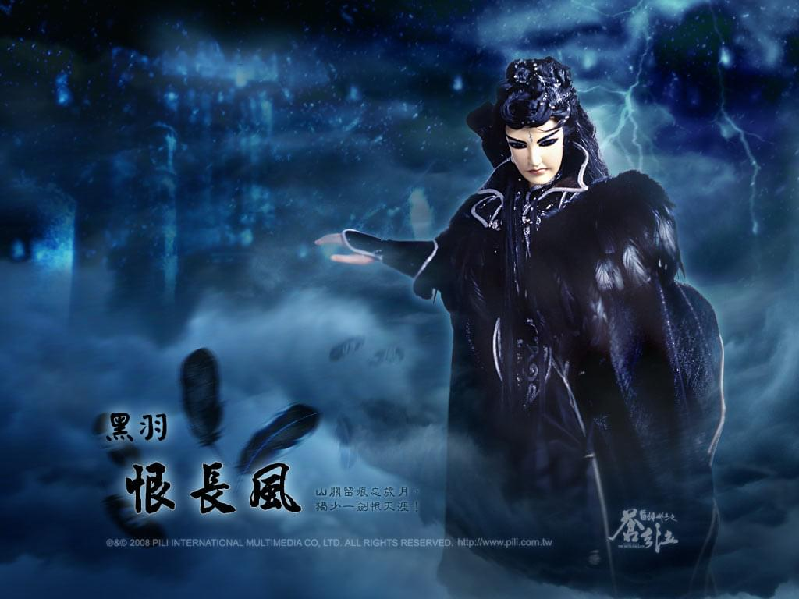
Day 2. 你喜歡最久的角色 – 素續緣
2017/03/02
我是小時候從龍圖霸業最末/封靈島入坑的，那時對續緣也算有好感吧。
高中畢業的暑假重新掉回布袋戲坑，從封靈島從頭來過。
然後就愛上續緣了！！！我兒子！！！必須好好疼愛的兒子！！！(〃∀〃)
續緣是個溫柔的暖男！！！（後來去查天下第一時期的他，就是後話了）
我的第一隻雨娃也是續緣>////<
我家素小餅（刀鋒版素續緣），生日：2013/03/14
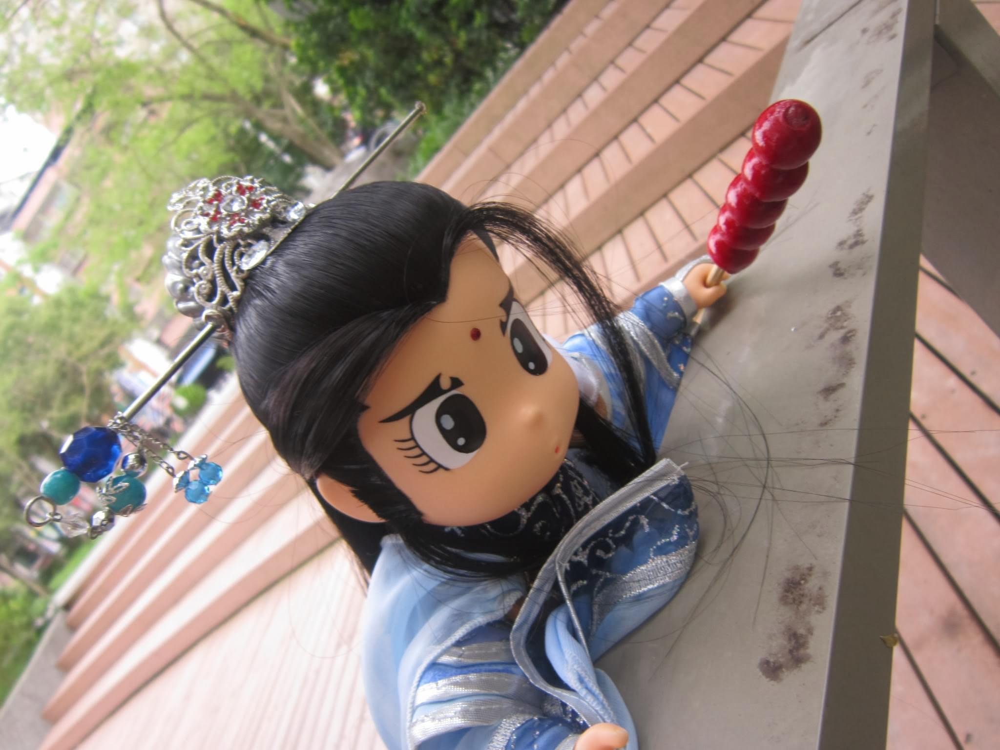
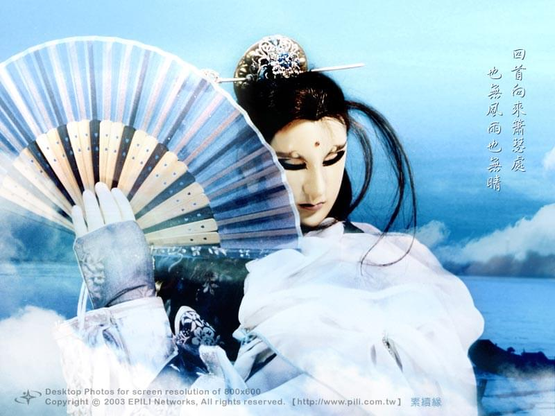
Day 3. 你很喜歡但很冷門的角色 – 東宮神璽
2017/03/04
我是冷門控～好吧就舉最近不錯喜歡的～
東宮神璽
雖然大家都會吐槽他還在飛 但除去這點，他的確是個冷門角r
後來劇情的安排也不怎樣
但我滿喜歡他的個性的
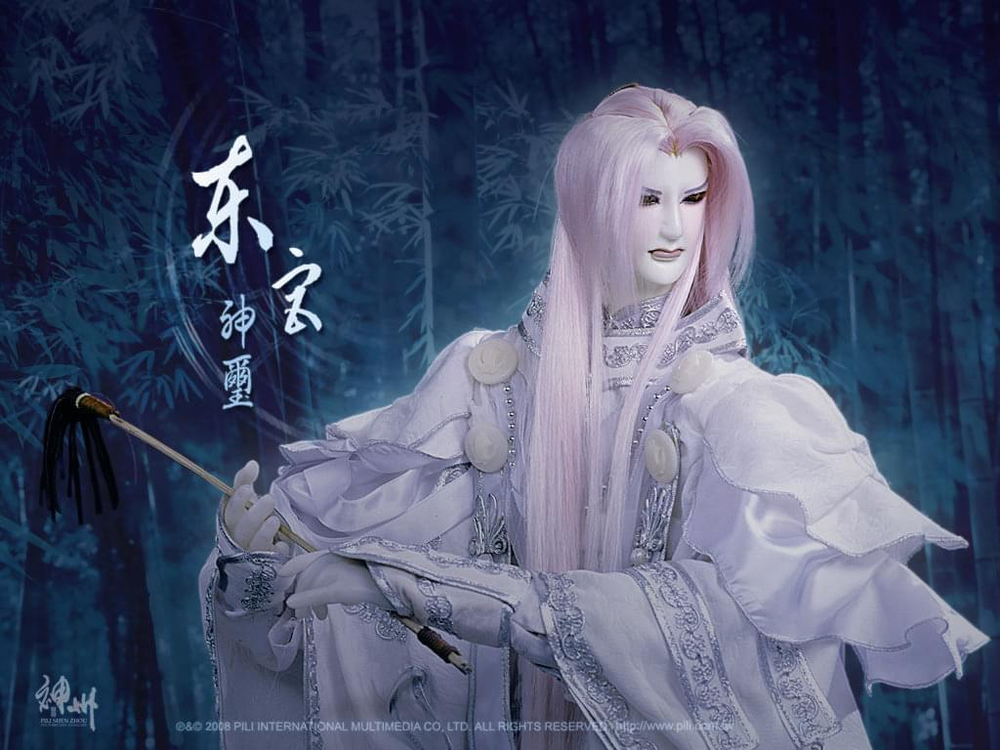
這題本來我想答皇甫定濤的
（（其實濤哥根本可以當我這30題一半以上的萬用答案惹ＸＤＤＤ
Day 4. 你很喜歡而且名字很奇怪的角色 – 鬼伶仃
2017/03/04
讓我再+1我朋友語言一次：布袋戲誰的名字不奇怪！！！
本日：鬼伶仃 本來還有候選答案像是羽人非獍、蒼等等，但最後還是覺得鬼伶仃最怪www
我是滿喜歡可愛的小四弟的，請支持問鬼！！！（咦）
附上我自己畫的水彩圖
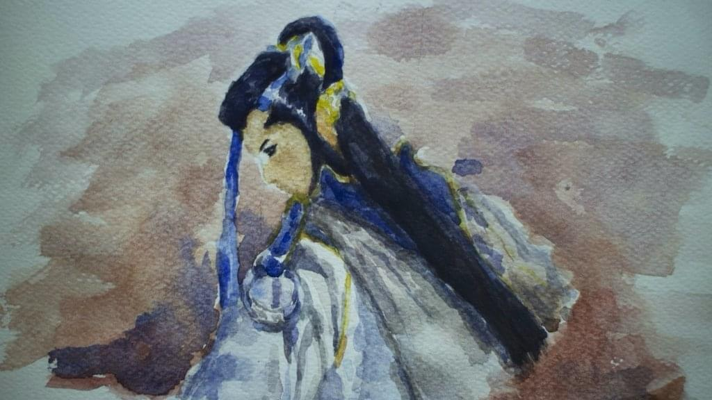
Day 5. 你很喜歡可是領便當的角色 – 師九如
2017/03/05
這個有點太多了吧ＸＤＤＤ
不過就挑一個出來說吧！
九如老濕！！師九如！！
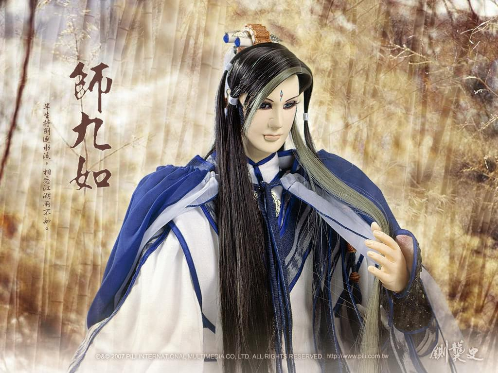
其實他曾是我的本命候選人 但自從龍之問表現到達巔峰之後，劇情方面一路走下坡
雖然還是很喜歡，但也因此無法成為本命
另外，祈禱我家泡泡早日平平安安回家～
最後附上我家藍莓酥的照片
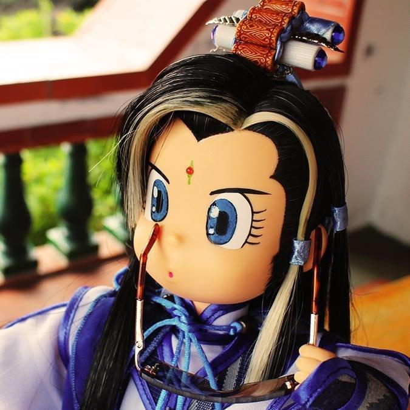
UPDATE: 2018/05/31 收錄回答記錄到blog這篇文時，泡泡已經平安回家囉
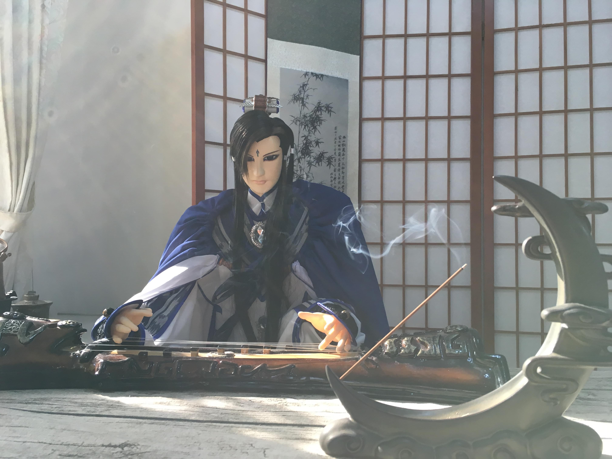
Day 6. 帶給你最多回憶的腳色 – 天忌
2017/03/08 - 「我回來了」因為這幾天調適心情，比較少發噗，今天繼續挑戰30日角色風
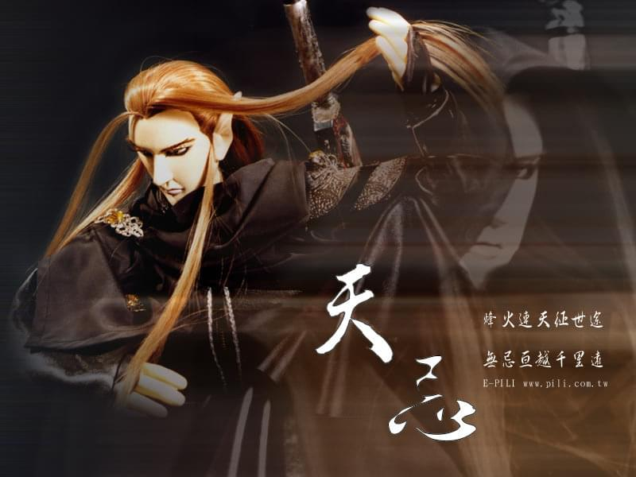
因為我是從電視播的霹靂封靈島入坑，
身為片尾擔當的他讓我印象非常非常深刻，
每次看到片尾曲都想在：啊，又要等到明天了！！
霹靂封靈島片尾曲
而且片尾曲真的超、好、聽！！！可說是純音樂片尾中數一數二的（個人意見
題外話：我好像都滿喜歡這類型的（汗）沈默寡言、很裝…仇大苦深不知道算不算ＸＤ
Day 7. 對你最有意義的角色 – 蒼
2017/03/09
這種問題真應該填本命，但還是要繼續挑戰30天都不同人ＸＤ
六絃之首．蒼
不為什麼，只為了他是我第一隻收回家的
帶給我滿滿回憶的花花，
雲林的花博公園、偶戲館、台中的新社花海、民俗公園、文學館、雙北、…
以後一定帶你去更多地方！！
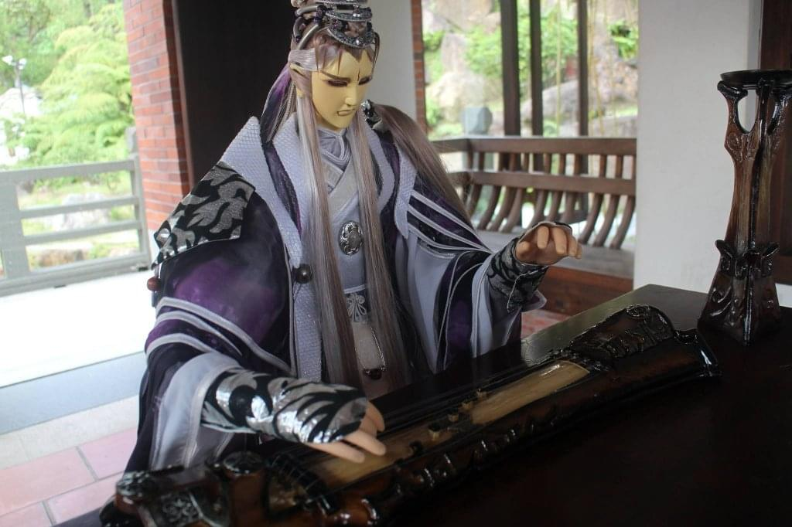
＊＊附上自剪的MV 是我第三支MV 那時技術還很菜ＸＤＤＤ
PS. 好像被鎖地區了orz
Day 8. 你覺得最有男子氣概的角色 – 燕歸人
2017/03/10
還是很想回答濤哥 囧
不過，為了第30天要忍耐!
燕歸人，颯風沾、問途寒，誰與共飲，誰敢當關，燕戟歸命人不還！
真的霸氣到不行
浴血闖翳流也是MAN到極致喇!!!
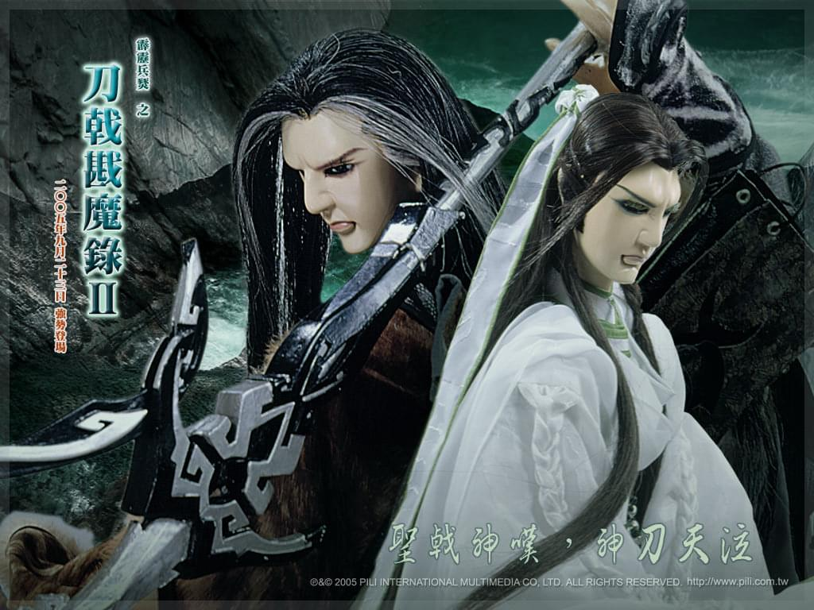
Day 9. 第一個喜歡上的角色 – 直接犯規答了好多個角色XDDD
2017/03/11
基本上，如果以小時候從封靈島開始算，應該是天忌，不然就素續緣，但都發過了orz
所以這次，就從我第一次往前倒回去看的風起雲湧一來說吧！
風雲雨電我是滿喜歡他們的故事的～最喜歡的還是雲門八采：佾雲這隻絕世大烏龜，傲嬌的曲雲，人格分裂（？）的韶雲，癡情的瑟雲～
然後再外加一個我也滿喜歡的傾天紅吧！！
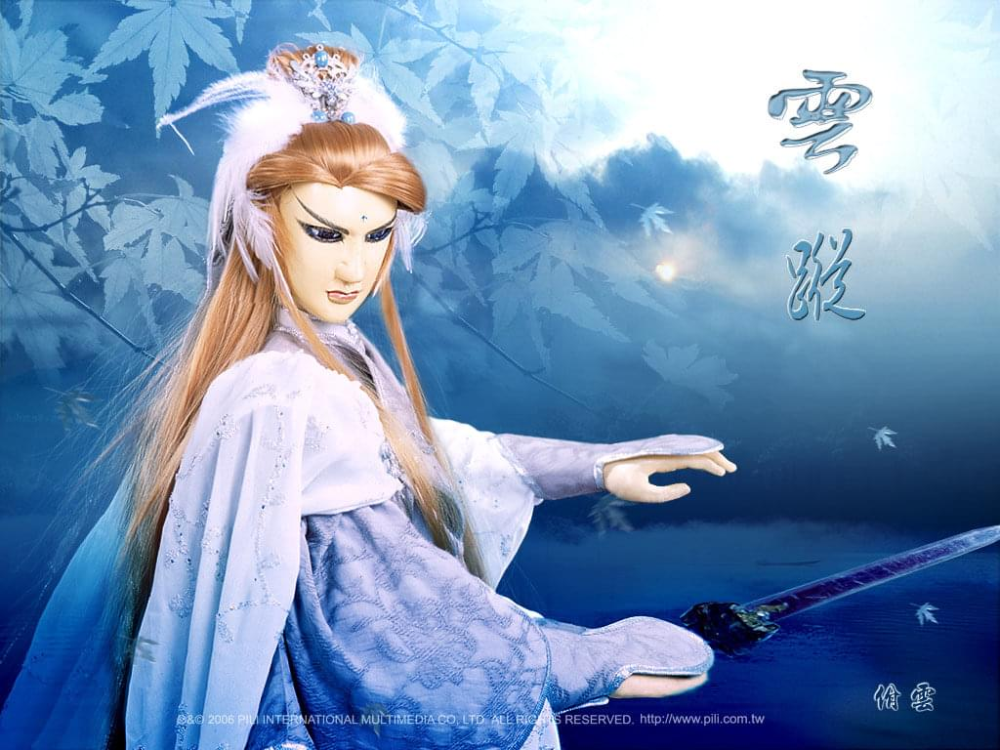
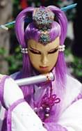
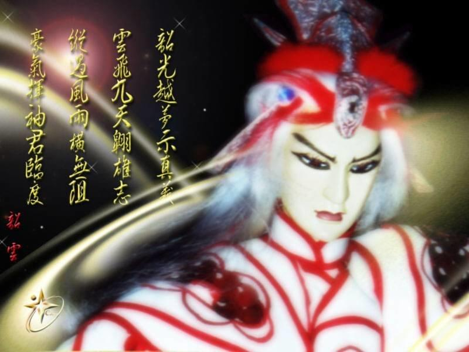
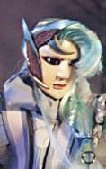
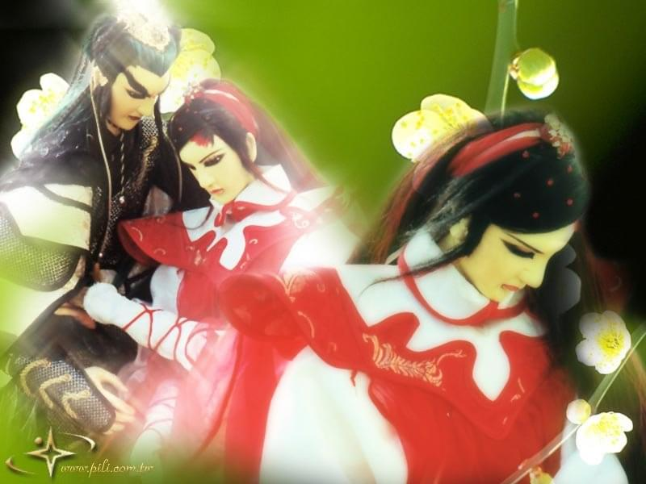
Day 10. 符合你心中王子的角色 – 冰川孤辰
2017/03/12
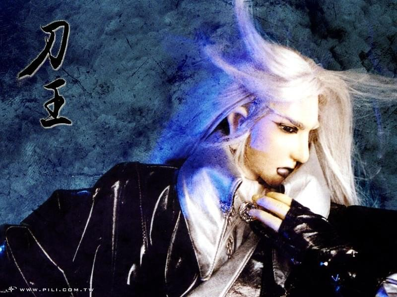
因為他就真的是王子身份，只是城後來被滅了而已
我滿喜歡刀王時期的他，霸氣又華麗，然後就沒有然後了…
史上破格破最大的角色，說好的王子復仇記咧!!!
(這也是我一直無法喜歡某巨巨的原因，不能接受這樣踩人跟破格
(暫完，11-20、21-30另開一篇收錄)